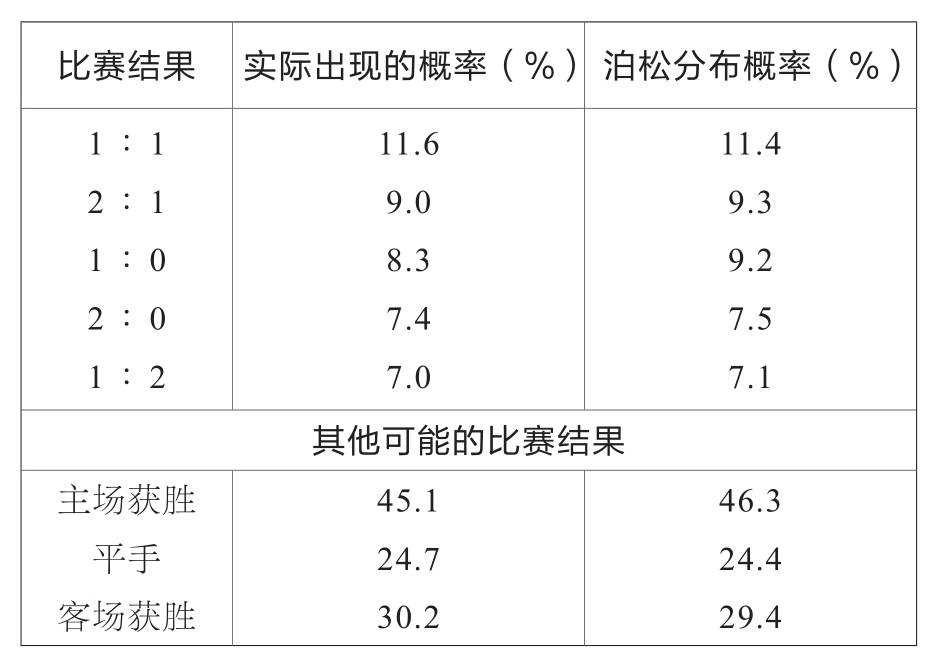

“上帝从不掷骰子。”(1)阿尔伯特·爱因斯坦（Albert Einstein）曾认真地说道。但爱因斯坦的论述中似乎并不包括“足球之神”。虽然其他的运动项目也靠运气，但足球运动中运气的成分非常高，甚至足球比赛中的一些偶然情况反而是常态。数据分析显示，足球比赛过程中随机事件发生的概率非常大。
体育学家马丁·雷蒙（Martin Lames）研究了很多德国联邦联赛中的进球情况，并且计算出了偶然进球的概率。这些进球大多数不是因为极强的团队合作精神，而是凭借偶然的运气。比如以下这些情况：
·射门时做了假动作，使守门员无法防守。
·球从球门横梁或者侧柱上反射入门。
·守门员接到从别的地方弹入球门的球。
·远距离射门。
·守门员长时间守球。
·对手无意间射门得分。
根据这个定义，平均每年有大约40%的进球都是偶然的。
一般来说，偶然事件发生的数量难以计算，为了解决这一问题，数学家专门研究出来一个计算偶然事件的理论——概率论。在概率论研究出来之后的300多年间，人们利用它分析出了不计其数的偶然事件发生的概率。
偶然事件也不能摆脱规则的约束，即使这是足球比赛中的偶然事件，它们也必须服从规则。研究显示，这些偶然事件其实也有自己的一套结构体系，而且这套体系早在其他领域被我们熟知。
我们先分析进球。整场足球比赛可以被分成许多时间段，分析这些时间段后我们可以发现以下一些特征：
·进球很少。在绝大部分的时间段内都没有进球，在少部分的时间段中最多有一个进球。
·在一个时间段内进球得分的概率与这个时间段的长短成比例。
·其他时间段内是否进球并不影响在此时间段内是否进球。
神奇的是这三个特征也导致了足球比赛中的偶发射门是有规律、有结构的——足球比赛中的进球遵循泊松过程(2)。1951年，M.J.莫罗尼（M.J.Moroney）发现了这一点，并在他的作品《数字中的事实》（Facts from Figures）中记录了下来。
这种符合上述三个特征的偶然事件在很多情况下都很常见，如城市中的意外交通事故，林区发生雷击，一个地区出生、死亡、结婚、离婚、自杀的概率等。
最令人惊奇的是放射性粒子衰变也符合这一规律——足球队中的进球与放射性粒子的衰变都遵循了相同的数据模型。进球得分的计算与放射性粒子衰变采用的数据计算非常相似，借助泊松过程我们便可以进行这个运算：在一场比赛中，一个球队获得k个进球的概率为[(e－m)×mk]÷k！。
这个式子中e是自然常数，即e=2.718…，k！表示k的阶乘，即k×(k－1)×(k－2)×…×3×2×1，m为平均每局比赛足球队所获得的进球数。
在2008/09赛季至2012/13赛季的德国甲级联赛中，平均每局比赛主场球队进球1.63个，客场球队进球1.25个。
泊松分布概率显示，主场球队进球数量为0、1、2、3、4、5个的概率分别为19.59%、31.94%、26.03%、14.14%、5.76%、1.88%；相应地，客场球队的进球概率分别为28.65%、35.81%、22.38%、9.33%、2.91%、0.73%。
这样就可以计算一场比赛一个具体的比分出现的概率了。比如说比赛结果为1︰1的概率就是0.3194×0.3581=0.1144=11.44%，这个进球结果也是足球比赛中最有可能出现的情况。
而在实际的足球比赛中，1︰1的结果出现的概率为11.6%。准确吧！
下表罗列了按照泊松过程计算出来的比赛结果的概率与实际情况的对比数据：

数学模型与现实结果惊人地一致，看来我们已经洞察足球界的秘密了！
(1) 这里掷骰子表示事情发展有一定的概率，爱因斯坦不信概率论，因此这里指世间事物发展没有概率。
(2) 泊松过程（Poisson-Process）是一种累计随机事件发生次数的最基本的独立增量过程。在本文所举的例子中，进球次数随着时间增加的过程就构成了一个泊松过程。